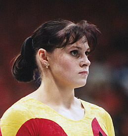

Kathleen Stark Kern (GDR/GER)
1996 German AA Champion

Competition Results
1985
GDR Children's Spartakiade: 2nd AA (9-year-old division)
1989
Intl. Junior Championships: 20th AA
1990
ESP-SUI-GDR Meet: 9th AA
Goodwill Games: 12th AA, 6th V
Olympic Cup: 8th AA
1991
DTB Cup: 9th AA
GER Championships: 20th AA
GER-ROM Dual Meet: 2nd Team, 11th AA
Swiss Cup: 8th Team
World Championships: 10th Team, 26th AA
1992
GER Championships: 6th AA
GER Olympic Trials: 6th AA
Olympic Games: 9th Team, 32nd AA
ROM-GER Dual Meet: 2nd Team, 8th AA
1995
GER Championships: 2nd AA, 2nd V, 2nd FX, 3rd UB, 3rd B
ROM-GER Dual Meet: 2nd Team, 6th AA
1996
Cottbus International: 5th FX (prelims)
DTB Cup: 1st UB, 6th V, 6th B
European Championships: 14th AA
GER Championships: 1st AA
World Championships: 6th UB, 16th V (semis)
1997
Cottbus International: 1st V, 4th FX, 6th UB, 7th B
GER-ROM Dual Meet: 2nd Team, 10th AA
Glasgow Grand Prix: 7th V, 8th UB
World Stars: 4th UB, 5th B, 6th V
This page was created on September
02, 2006.
© Gymn Forum